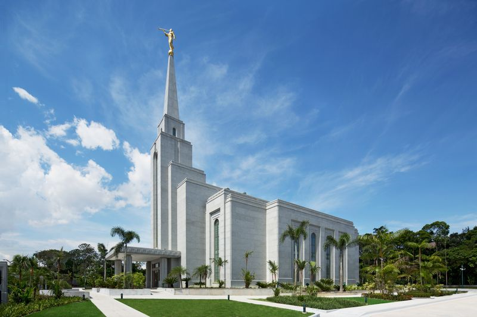
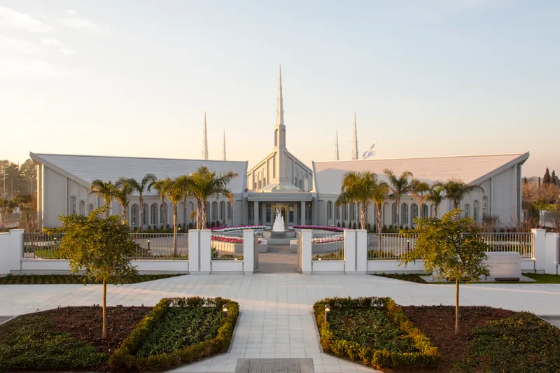
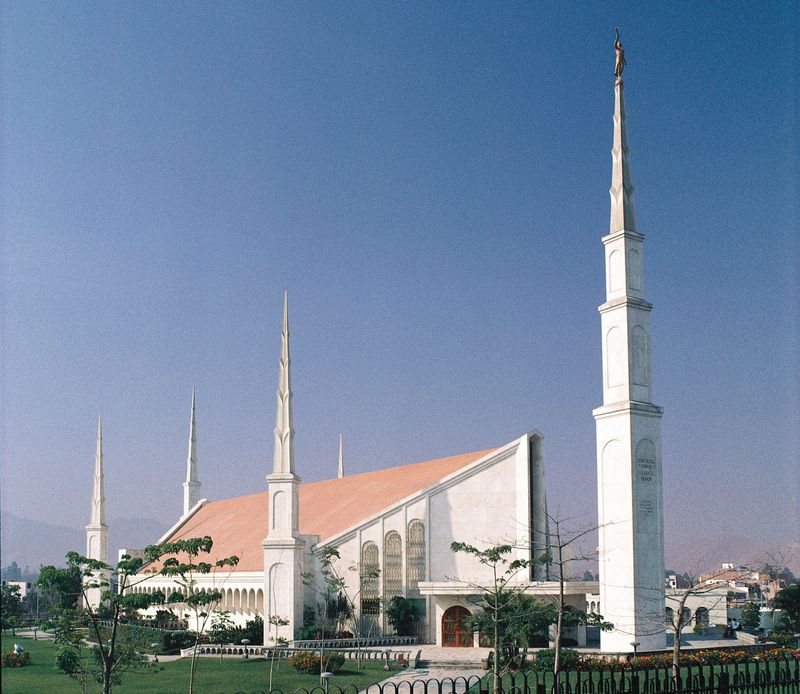

Home
Old
New
Large
Small
Página Inicial
Templo de Belém
Templo de São Paulo
Templo de Campinas
Templo de Curitiba
Templo de Recife

Templo de Manaus

Templo de Buenos Aires

Templo de Lima
Templo de Bogotá